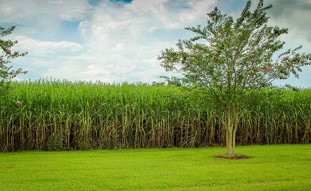

Sobre o Agrinho
A cana-de-açúcar, uma das culturas mais antigas e amplamente cultivadas,
desempenha um papel crucial na economia global e na produção de alimentos
e energia. Originária do Sudeste Asiático, essa planta pertencente à
família das gramíneas tornou-se uma das principais fontes de
açúcar em todo o mundo. Além disso, a cana-de-açúcar é uma matéria-prima
essencial na produção de etanol, um biocombustível renovável amplamente
utilizado para reduzir a dependência de combustíveis fósseis e mitigar
os impactos ambientais do transporte.
Desafios
Do cultivo à colheita, a produção de cana-de-açúcar envolve uma série de processos
complexos que exigem cuidado e conhecimento especializado. Os agricultores devem
considerar uma variedade de fatores, como clima, solo e técnicas de
cultivo para garantir altos rendimentos e qualidade do produto.
Além disso, a indústria da cana-de-açúcar emprega milhões de pessoas
em todo o mundo, desde trabalhadores rurais nas plantações até engenheiros
e cientistas em laboratórios de pesquisa.
Contribuição

No entanto, apesar de seus benefícios econômicos e energéticos,
a produção de cana-de-açúcar enfrenta críticas relacionadas
à sua sustentabilidade ambiental e aos potenciais impactos sociais.
Questões como desmatamento, uso excessivo de água e condições de
trabalho nas plantações são fontes de preocupação para os defensores
o meio ambiente e os direitos humanos. Assim, o cultivo e o processamento
da cana-de-açúcar continuam sendo temas de debate e exigem abordagens
cuidadosas para garantir que seus benefícios sejam equitativamente
distribuídos e sustentáveis a longo prazo.
Relogio da Cana de Açucar
Tempo restante para meu Aniversário
7
dias
7
horas
7
min
7
seg